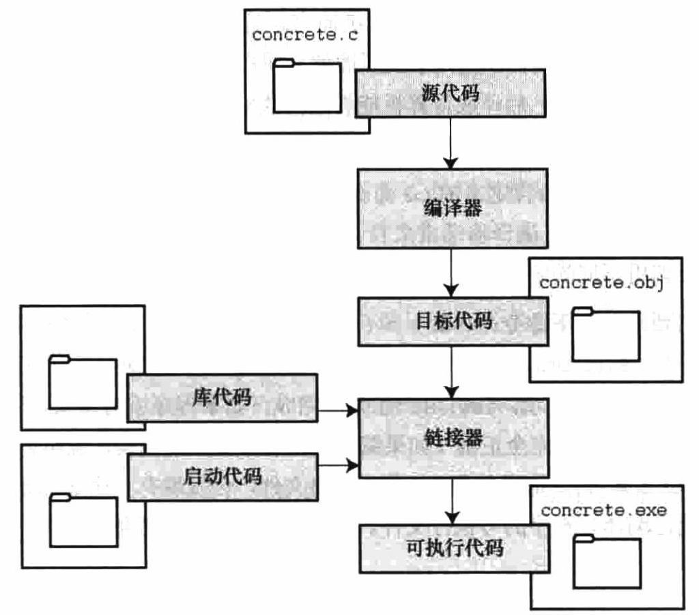

作者：Eventi 出处：http://www.cnblogs.com/Eventi 欢迎转载，也请保留这段声明。谢谢！
1972年，贝尔实验室的丹尼斯·里奇（Dennis Ritch）和肯·汤普逊（Ken Thompson）在开发UNIX操作系统时设计了C语言。
C语言是在B语言（汤普逊发明）的基础上进行的设计。
设计特性：能轻松的完成自定向下的规划、结构化编程和模块化设计；C语言编写的程序更易懂、更可靠。
高效性：运行速度快，更接近汇编语言的高效特性和微调的能力。
可移植性：C程序只需要稍作修改或不修改，通过其他系统的C编译器进行编译就能其他的系统上运行。而无论是使用家庭计算机、专业工作站，还是大型机；无论是使用Windows、Unix、linux还是Mac操作系统；从8位微处理器到超级计算机都能找到针对特定系统的C编译器。
强大而灵活：很多的操作系统有C程序的代码以及很多编程语言的编译器、解释器都由C语言实现，C程序还可解决物理学、工程学的问题，甚至可用于制作电影的动画特效
面向程序员：程序利用C可以访问硬件、控制内存中的位。
C语言功能强大，但却很容易犯错误。特别是指针的使用很强大，但稍不留神就容易出错。
1987年，布莱恩·柯林汉（Brian Kernighan）和丹尼斯·里奇（Dennis Ritchie）合著的The Programming Language第一版是公认的C标准，通常称之为K&R C或经典C。实际上，由于缺乏官方标准，UNIX实现提供的库已成为标准库。
美国国家标准协会（ANSI）于1983年组建了一个委员会（X3J11），开发了一套新标准，并于1989年正式公布。该标准定义了C语言和C标准库。
国际标准化组织与1990年采用了这套C标准（ISO C）。ISO C和ANSI C是完全相同的标准。
ANSI/ISO标准的最终版本通常叫作C89（因为ANSI于1989年批准该标准）或C90（因为ISO于1990年批准该标准）。另外，由于ANSI先发布C标准，因此业界人士通常使用ANSI C。
1994年，ANSI/ISO 联合委员会（C9X委员会）开始修订C标准，最终发布了C99标准。
标准委员会在2007年承诺C标准的下一个版本是C1X，2011年终于发布了C11标准。
C程序的源代码通过编译器的编译生成目标代码，目标代码、库代码和启动代码通过连接器的链接生成可执行代码。其过程如下图所示：

一个简单的C程序代码：
#include <stdio.h>
int main(void) /*一个简单的C程序*/
{
int num; /*定义一个名为num的变量*/
num=1; /*为num赋值*/
printf("I am a simple "); /*使用printf()函数*/
printf("computer.\n");
printf("My favorite number is %d because it is first.\n",num);
return 0;
} 一个简单的C程序可剖析为如下结构：
#include这行代码是一条C预处理器指令（preprocessor directive）。通常，C编辑器在编译前会对源代码做一些准备工作，即预处理（preprocessor）。
#include <stido.h>的作用相当于吧stdio.h文件中的所有内容都输入到该行所在的位置。
C程序一定是从main函数开始，并以main函数的结束而结束。
适当的注释能提高程序的可读性，在C程序中支持两种注释风格。具体如下：
/*这是一条注释，可多行注释*/
//这是一条注释，只能单行注释（C99新增的注释风格）{
......
}一般而言，所有的C函数都使用花括号来标记函数体开始和结束。例如main函数：
int main(void)
{
/*函数体*/
}花括号还用于把函数中的多条语句合并为一个单元或块。例如for语句：
for(;;)
{
/*多条语句*/
}int num;这条声明完成了两件事，其一，在函数中有一个名为num的变量，其二，int表明num是一个整数。
在C语言中，所有的变量都必须先声明才能使用。
num = 1;在执行int num;声明时，编译器在计算机内存中为变量num预留了空间，然后在执行这行赋值表达式时，把值存储在之前预留的位置。
不遵循C语言的规则就会犯语法错误。 编译器一般能检测出来。
语义错误就是意思上的错误。编译器一般不能检测出来。
学习书籍《C Primer Plus 第六版》笔记